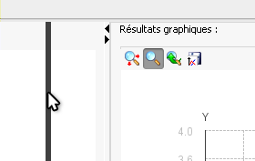

Astuces
Les trois panneaux de la fen�tre principal de Baldr sont redimensionnables.
Il suffit simplement de d�placer les barres de s�paration avec la souris.

On peut aussi les masquer totalement en utilisant les petites fl�ches situ�es aux extr�mit�s.